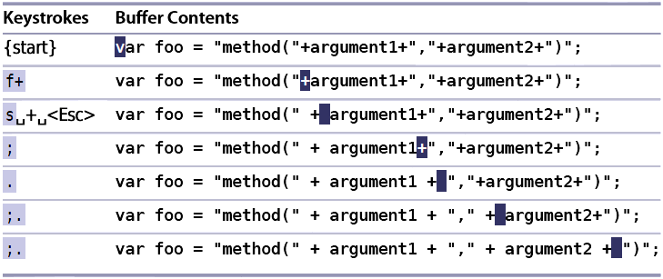

Tip3: 以退为进
合理的推出插入模式，使得插入模式操作少，可复用
f{char} 光标跳到当前行当前字符后面第一个{char}字符所在位置
f+光标跳到当前行下一个+字符处F+光标跳到当前行上一个+字符处
s删除光标所在字符并进入插入模式，相当于xi
;重复上次f{char}指令，跳到下下个{char}字符
,反向重复上次f{char}指令，跳到上上个{char}字符
例子：将代码中所有的+字符前后加一个空格

| 上一篇 | 下一篇 |
|---|---|
| 技巧2 不要自我重复 | 技巧4 执行、重复、回退 |